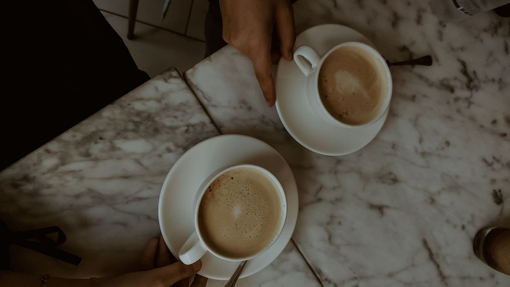

Brew Buddies started during lockdown, when I found myself in a difficult place mentally. For much of my life, I'd struggled socially — feeling awkward, never quite knowing how to connect, and often feeling like I was trying to fit in but getting it wrong. Lockdown eventually led to my autism diagnosis and a better understanding of myself. With my naturally analytical, slightly "Spock-like" brain, I started looking at connection differently — why it can take effort, but also why it matters so much.
For me, connecting with people has always been something I have to be proactive about. It takes effort, but the rewards are usually worth it. A conversation, a coffee, a simple invitation — small things can matter. And I fucking love proper coffee — none of that Bisto crap. Good coffee and good conversation seemed like a pretty good combination.
When lockdown ended, I put the idea on hold. But something didn't add up. We were back out in the world, yet people were working remotely, living further apart and somehow staying less connected. For me, going from virtual to real life and then back to virtual was hard. I'd finally got used to one way of connecting, only to have it change again, and again.
Then my dad passed away, and it brought the idea back into focus. Life is short, people matter, and it's easy for good relationships to drift. So Brew Buddies came back.
No Slack, Teams or Zoom. Just people, proper coffee and a reason to connect.

Sometimes that's enough.